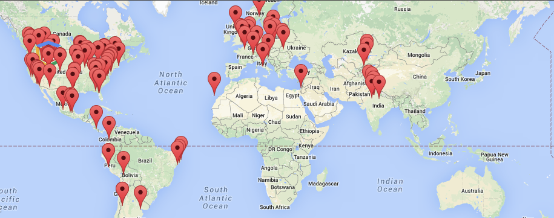

The south. Before you ask, it's the south. I know there are no dumb questions, but yeah, it's South Korea we're talking about here.
South Korea is known for its tech industry. Samsung. LG. Samsung, again. You're likely even reading this on a Korean made computer, monitor or phone. But where Korea excels at hardware, they fall behind on the web.
This is a country where online shopping has grown nearly ubiquitous. Online gaming has more than one 24-hour channel that people watch. A place where you file your tax return by simply clicking a few times online. And the connection is fast. Opportunity & connectivity aren't the issue.
It seems as if everyone is on a smart phone all of the time, yet few websites are responsive. C, C++ & Java are the main in Korea, JavaScript the stranger. It's as if Korea skipped the web and went directly into mobile software.
Have a look at a map of a recent AngularJS conference meetups. Notice the presence in East Asia, it's not entirely the timezone difference but largely a lack of interest.

So what are the reasons why JavaScript - the most common and perhaps most popular programming language - lacks much ground in Korea?
1. The Browser
What did the Korean web developer say when he was told he had to continue support for IE6? '아이이고!' That was a joke, and you know it was funny because I just told you.
OTL.
Not an acronym. That's a guy bashing his head on the ground.
Back to the browser. Browser usage in Asia can look quite different from the western world.
Pop quiz: What do these names have in common:
- Qihoo360
- TencentQQ
- Sougou
- 2345
- Cheetah
- UC
- Maxthon
Answer: They are all browsers in China that are more popular than Firefox.
Good news: in Korea the big players are the ones you might be used to: IE, Chrome, Firefox, Safari.
Bad news: the big one is IE at about 70-80%. Not that IE10 or IE11 are bad, they're great. It's the older relatives that make the developers & designers OTL. In fact, some JavaScript frameworks such as AngularJS 1.3 have already dropped IE8 testing support, leaving about 20% of Korean users out of luck.
Why IE? Whyyyyyyy???
The IE 'stranglehold' goes back to a 1999 Internet security law that guarantees that all online shopping must be done with IE. No joke. You still have to use ActiveX.. In 2015. For web security.
In other words, someone using a macbook running OSX can't buy anything online. Even with the big players, gmarket.co.kr, owned by eBay, I can't buy anything on there without using an out-of-country credit card. Many major government, education and corporate websites just don't even work without IE.
The IE situation has lead to an interesting situation: the normalization of website tech support. I once had someone help me with my online banking, which led to a 30 minute phone call with the sites tech support, trying to fix Windows, ActiveX & IE issues. Though the whole operation seemed shocking to me, it was treated as shockingly normal.
2. The Geography
The geography of Korea helps explain a lot about why client-side frameworks aren't popular.
First of all, you're never offline. High speed Internet still works on your phone when you're on the subway. Deep underground. Going through a mountain.
Secondly, as in any major city, you're never far from a server. Yes, the country of Korea largely approximates the size and population density of a city.
These two factors combined indicate server-side transfer speeds and connectivity are enough. Korean developers don't have to worry as much about users clicking on a button and nothing happening as they rarely face slow or dropped connections.
3. The Job
Developer sounds like a great job. But not in Korea. Korean coders are largely over-worked, underpaid, and vastly under-appreciated. Many tech company offices look like the movie Office Space.
As a result, there is a computer science brain drain in Korea where one of the main limiting factors is English fluency. It's hard to keep the best developers when heading overseas may reduce your work hours and double your salary. Rarely does picking up a second language pay so well.
The language barrier also doubles as an impediment to learning new skills. Imagine how hard it would be if you had to learn Korean in order to study and keep up with the fast changing JavaScript world. Grunt / Gulp / Backbone / Ember / Angular / CSS / Sass / LESS / Compass / Stylus / React / Functional / Isomorphic / Reactive / Traceur / Babel / NPM / Bower / JSPM / EcmaScript2015 /OTL. It's overwhelming enough as it is. This is akin to the situation Korean developers face, while working longer hours with fewer incentives. My sympathies.
Take away the light at the end of the tunnel, and coding and learning become a burden. It's no longer something you study on weekends for fun, hacking away on some dumb project for curiousities sake.
Final Thoughts
JavaScript and the web have a bright future. I hope that light shines on Korea. If you're interested in promoting AngularJS in Korea, I've started a meetup group you should join.
Now I could be wrong, and often am. There's nothing worse than an outsiders perspective on an insiders world, and having said that I am now officially immune to criticism. That's how the world works. If you have any corrections, let me know in the comments.